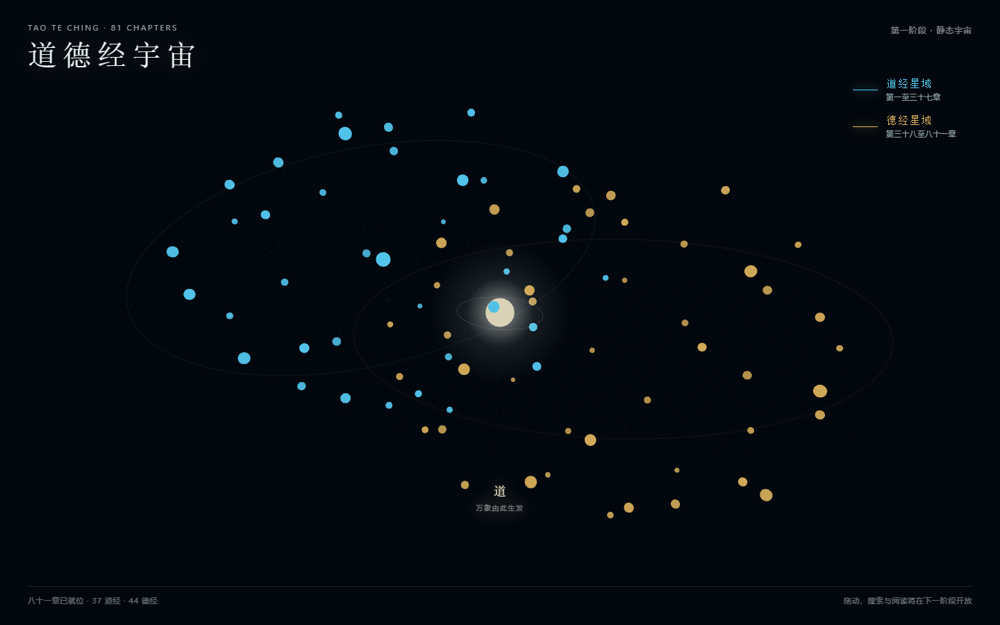
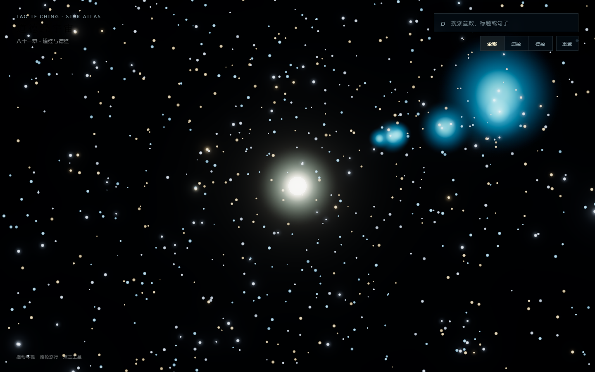
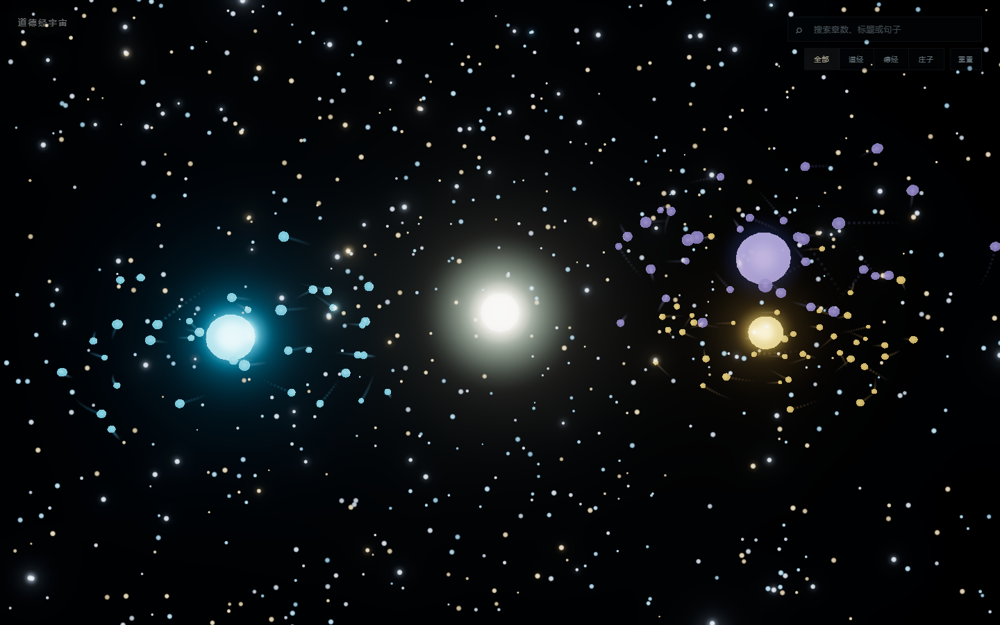

Harness 案例 03 · 道德经宇宙
道德经宇宙搭建实战
从 81 章《道德经》静态双星域，到 81 + 33 篇、三层轨道、可搜索穿梭和四层阅读内容。这里记录每次方向修正背后的原因。
最终结果
不是星空皮肤，而是内容有语义的思想宇宙
中央之道 → 三主星 → 一百一十四篇
白金中央之道固定；青蓝道经、暖金德经、淡紫庄子三颗主星以不同半径、相位和倾角运行；每篇内容对应一颗唯一星体。


Harness 案例证明
这个项目验证了文件驱动协作能稳定推进长任务
Phase 0
先写 DESIGN.md，再写 Three.js
项目最初就写下视觉合同：安静、深邃、可探索的东方哲学宇宙，不做科幻游戏大厅。这个文件在每次新增星域和动效时负责判断“能不能加”。
| 设计项 | 合同 |
|---|---|
| 背景 | 深空黑蓝 #02070D，不使用大面积紫蓝渐变 |
| 域色 | 道经青蓝、德经暖金、庄子淡紫，中央之道白金 |
| 布局 | Canvas 全屏，UI 沿四角，中央不堆卡片 |
| 动效 | 表达空间层次，不制造持续噪声；支持减少动态效果 |
| 内容 | 原文为根，解释不冒充唯一答案；不加登录、付费和 AI 问答 |
工程骨架
把星海、镜头、探索和内容数据分开
tao-te-ching-universe/
├── index.html
├── DESIGN.md
├── scripts/
│ ├── build-tao-data.js
│ └── build-zhuangzi-data.js
├── src/
│ ├── main.js # 启动与模块编排
│ ├── starfield.js # 背景星、主星、副星、拖尾
│ ├── universe.js # 相机、命中、飞行与返回
│ ├── explorer.js # 搜索、筛选、阅读面板
│ ├── data.js # 81 + 33 篇结构化内容
│ └── style.css
└── package.json| 模块 | 职责 | 不能负责 |
|---|---|---|
starfield.js | 星体位置、轨道、材质、拖尾和域亮度 | 搜索表单与文章 DOM |
universe.js | 相机控制、目标命中、穿梭状态机 | 内容翻译与章节结构 |
explorer.js | 搜索、筛选、悬停摘要、四层阅读 | 逐帧更新星体 |
| 构建脚本 | 生成稳定 ID、校验篇数、记录来源 | 浏览器运行时修补脏数据 |
npm install
npm run check:data
npm run dev
npm run build阶段演进
每一阶段只解决一个主要问题



Phase 1 · 数据与静态宇宙
建立 Vite + Three.js 项目；修复中文数字解析；生成 81 章 JSON；用两个 InstancedMesh 渲染 37 颗道经星和 44 颗德经星。此时只做静态构图，不提前实现搜索与穿梭。
Phase 2 · 探索入口
加入搜索、域筛选、悬停卡、OrbitControls、GSAP 1.2 秒飞近与返回。390 × 844 下重新排列标题、搜索和阅读卡。
Phase 2 重构 · 进入星海
推翻“站在外部看星环”的构图。加入桌面 5000 颗近中远背景星、自定义点云着色器和径向星轨，让相机置身宇宙内部。
Phase 2.5 · 宇宙运行感
章节星围绕双主星做倾斜椭圆运动；拖尾按域批量渲染；域切换驱动星海冷暖；搜索先锁定目标再穿梭；阅读卡关闭实时背景模糊解决卡顿。
Phase 3 · 内容与庄子
统一 81 + 33 篇稳定 ID，新增原文、注释、典故、启示四层内容。庄子成为第三星域，主星映射《逍遥游》。聚焦和返回改用共享进度补间。
Phase 3.2 · 三层轨道秩序
中央核心固定；三主星公转；副星以不同倾角和偏心率形成三维思想云。常态残影 8–12 点，穿梭时扩展到 15–20 点；中央之道支持“随缘一页”。
数据可信度
文件名写着“全文”，不代表内容真的完整
Phase 3 接入庄子时，本地 `庄子全文.txt` 实际只有前十二篇完整。项目没有用空字段或挪用其他篇章补齐，而是停止生成，换用可核验的公共领域底本。
性能修复
卡顿往往不是 Three.js 本身，而是 DOM 与合成策略
| 问题 | 根因 | 修复 |
|---|---|---|
| 打开阅读卡瞬间卡顿 | 大面积 `backdrop-filter` 持续模糊动态 WebGL 背景 | 聚焦卡改为 85% 深空底、微光边界，不做实时背景模糊 |
| 聚焦/返回对象过多 | 为每颗星创建独立 GSAP 动画 | 改为一个共享进度补间，在更新循环中统一插值 |
| 阅读时仍消耗大量帧 | 背景星、轨道和脉冲持续逐帧更新 | 穿梭和阅读状态暂停非必要更新 |
| DOM 过重 | 悬停阶段就构建四层长文 | 悬停只显示首句，抵达后再生成完整内容 |
| 移动端负担 | 沿用桌面星数和抵达距离 | 按视口降载，并单独调整手机相机距离与面板高度 |
验证体系
从数据、构建、交互、视觉到性能逐层验
| 层 | 验证 | 结果 |
|---|---|---|
| 数据 | 81 道德经 + 33 庄子、114 个稳定唯一 ID、四层字段完整 | 通过 |
| 构建 | npm run check:data、npm run build、所有 JS 语法检查 | 通过 |
| 交互 | 搜索“逍遥游”、穿梭、阅读、中央随机探索、返回宇宙 | 通过 |
| 响应式 | 1440 × 900 与 390 × 844，无横向溢出 | 通过 |
| 性能 | 本机 Windows、Playwright Chromium：桌面 1440 × 900 为 102.7 FPS，手机视口 390 × 844 为 107.0 FPS；原始执行报告未记录浏览器版本与采样时长，数字仅作当次环境快照 | 通过 |
| WebGL | 桌面/手机像素采样，glError = 0 | 通过 |
npm run check:data
node --check src/main.js
node --check src/starfield.js
node --check src/universe.js
node --check src/explorer.js
npm run build复用经验
下一次做 3D 内容宇宙，直接复用这套顺序
- 先定义世界观与禁用项。 用 DESIGN.md 约束颜色、层级、动效和内容边界。
- 先校验内容，再画星。 数量、ID、正文和来源必须在构建期过关。
- Phase 1 只做静态世界。 先确认构图，不让交互掩盖方向错误。
- 交互围绕状态机。 概览、锁定、穿梭、抵达、阅读、返回不能互相串线。
- 用批量对象和共享进度。 不为几千个粒子或上百颗星创建独立动画实例。
- 性能从合成层查起。 WebGL 背后的模糊、阴影和大面积半透明常比几何体更贵。
- 每次扩域都保留内容语义。 最亮的主星必须是具体篇章入口，不做纯装饰。
完成标准 用户进入页面第一眼记住“进入一个东方思想宇宙”，而不是看到搜索框、卡片或技术演示。